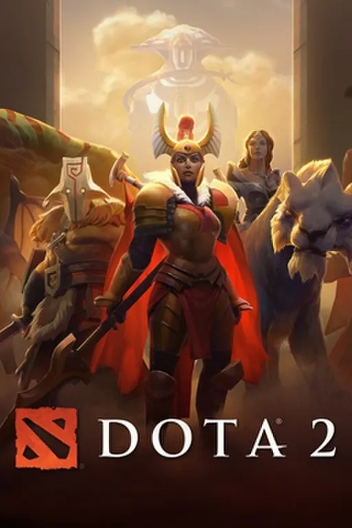
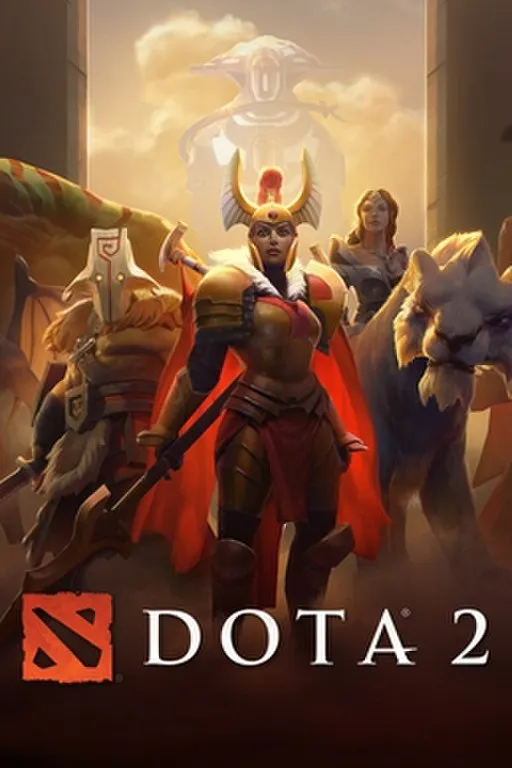
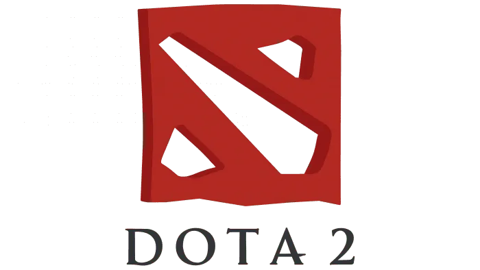

Minecraft (от англ. mine Ч Ђшахта; добыватьї + craft Ч Ђремесло; создаватьї) Ч
компьютерна€ инди-игра в жанре песочницы, созданна€ шведским программистом ћаркусом ѕерссоном и выпущенна€ его
студией Mojang AB.

Dota 2 Ч многопользовательска€ командна€ компьютерна€ игра в жанре MOBA, разработанна€ и изданна€ корпорацией Valve.
»гра €вл€етс€ продолжением DotA Ч пользовательской карты-модификации дл€ игры Warcraft III: Reign of Chaos
и дополнени€ к ней Warcraft III: The Frozen Throne. »гра изображает сражение на карте особого вида; в каждом матче
участвуют две команды по п€ть игроков, управл€ющих разными Ђгеро€миї Ч персонажами с различными наборами способностей
и характеристиками. ƒл€ победы в матче команда должна уничтожить особый объект Ч Ђкрепостьї, принадлежащий вражеской стороне,
и защитить от уничтожени€ собственную Ђкрепостьї.